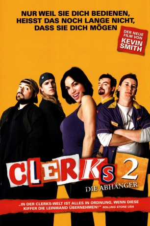
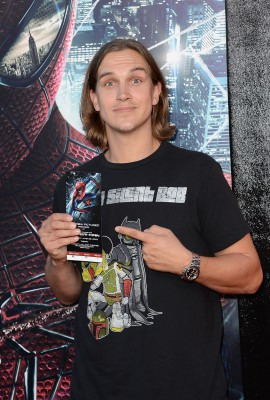

#3651 Clerks II
 
 IMDB-Wertung: 7.4 / 10
IMDB-Wertung: 7.4 / 10  Metascore: 0
Metascore: 0 
Im “Quick Stop”, in dem Randal Graves und Dante Hicks seit Jahr und Tag ihr Dasein fristen, fackelt ein Kurzschluss den gesamten Tante Emma-Laden ab und befördert die Freaks vor die Tür. Doch sie bleiben nicht lange ohne Job: Schnell finden sie Unterschlupf an der Theke von Mooby’s Fast Food Restaurant – sehr zum Missfallen von Dante, der mit seiner übereifrigen Verlobten Emma Bunting umziehen und in Florida eine Autowaschanlage eröffnen möchte. Bis ihm die freigeistige Becky Scott über den Weg läuft und er sich in sie verliebt. Dennoch hält er an seinem Plan fest, mit Emma wegzuziehen. Sein Kumpel Randal organisiert derweil im “Mooby’s” eine erotische Abschiedsparty mit einem Esel, bei der er reichlich Kunstnebel einsetzt, den der Gatte in spe irrtümlicherweise für Rauch hält und Polizei und Feuerwehr alarmiert. Damit tritt er eine Ereignislawine los, die nicht nur seine Liebschaften, sondern auch seine Freundschaft zu Randal ernsthaft gefährdet.
Jahr: 2006
Dauer: 97 Minuten
FSK: 16
Land: USA Studio: MGMTonspuren: DD5.1 - ,
Untertitel:
Auflösung: 720p (1280x720) Größe: 4915 MB
Genre: Komödie
Regisseur:  Kevin Smith
Kevin Smith
Drehbuch: Robert Ludlum
Soundtrack:
Darsteller:
 Brian O'Halloran als Dante
Brian O'Halloran als Dante- Jeff Anderson als Randal
-  Jason Mewes als Jay
 Kevin Smith als Silent Bob
Kevin Smith als Silent Bob- Jake Richardson als Teen #1
 Ethan Suplee als Teen #2
Ethan Suplee als Teen #2- Jennifer Schwalbach Smith als Emma
 Ben Affleck als Gawking Guy
Ben Affleck als Gawking Guy- Scott Mosier als Concerned Father
 Rosario Dawson als Becky
Rosario Dawson als Becky Kevin Weisman als Hobbit Lover
Kevin Weisman als Hobbit Lover Jason Lee als Lance Dowds
Jason Lee als Lance Dowds- Earthquake als Husband
 Wanda Sykes als Wife
Wanda Sykes als Wife- Zak Knutson als Sexy Stud
- Harley Quinn Smith als Kid in Window
 Kevin Michael Richardson als Cop
Kevin Michael Richardson als Cop- Walter Flanagan als Pack-o-Smokes Guy
 Anthony Marciona als Dancer
Anthony Marciona als Dancer- Christopher Shazar als Dancer
 Kenny Wormald als Dancer
Kenny Wormald als Dancer- Nancy O'Meara als Dancer
 Rebecca Lin als Dancer
Rebecca Lin als Dancer- Caroline A. Rice als Dancer
 Bryan Anthony als Dancer
Bryan Anthony als Dancer- Misha Gabriel Hamilton als Dancer
 Tracy Phillips als Dancer
Tracy Phillips als Dancer- Jimmy Federico als Dancer
- Katie Malia als Dancer
- Joel Manning als Dancer
- Ryan Thomas als Dancer
- Rachel Larratt als Counter Girl with Ear Guy
- Shannon Larratt als Ear Guy
- Sarah Ault als Catholic Schoolgirl
- Lalida Sujjavasin als Catholic Schoolgirl
- Trevor Fehrman als Elias
- Gail Stanley als Elias' Mom
- Bruce Macintosh als Elias' Dad
- Steven Rau als Diner #1
- Mike Tsucalas als Diner #2
- Joey Figueroa als Customer #1
- Mike Cecconi als Customer #2
- Ethan Jensen als Tumbling Customer
- Edward Janda als Fireman
- Byron Stanley als Bank Manager
- Grace Smith als Milk Maid
- Aurorah Allain als Dancer
- Carol Conners als Dancer
- Daveione Williams als Dancer
- Jason Beitel als Dancer
Datei: X:\2-Dilogie(A-F)\Clerks\Clerks II (2006, FSK16, 1280x720).mkv seit 12.05.2016
Festplatte: HD Collection-2(A-Z)-3(A-M)
 Alle Filme aus Gruppe '2-Dilogie(A-F)\Clerks'
Alle Filme aus Gruppe '2-Dilogie(A-F)\Clerks'